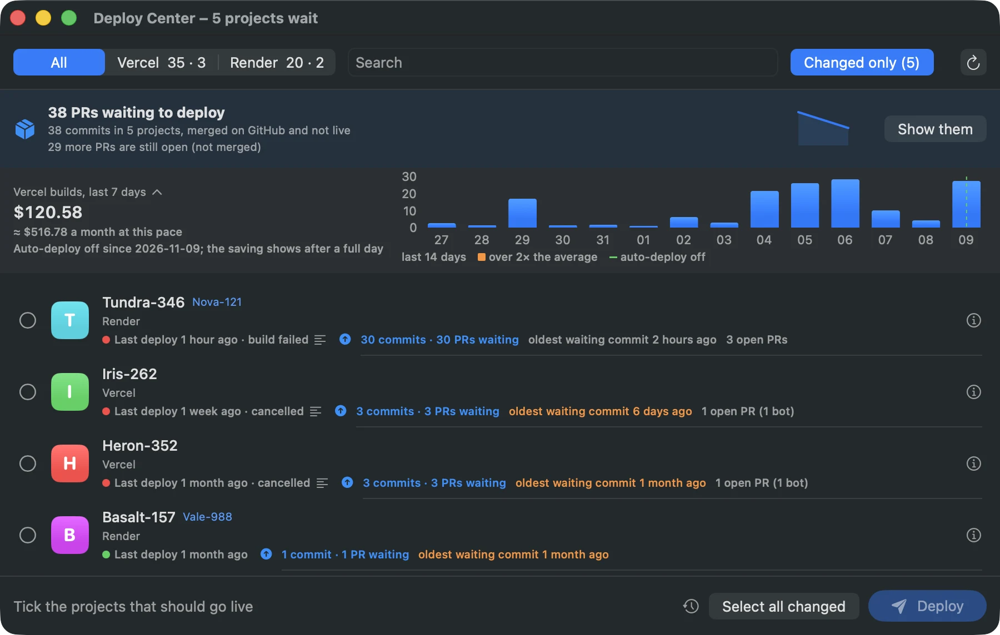
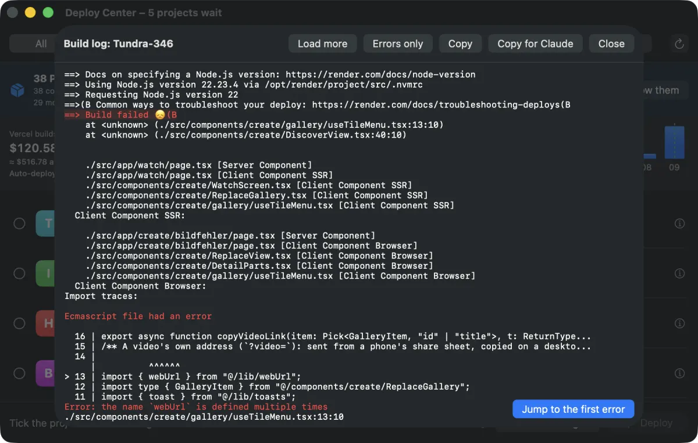
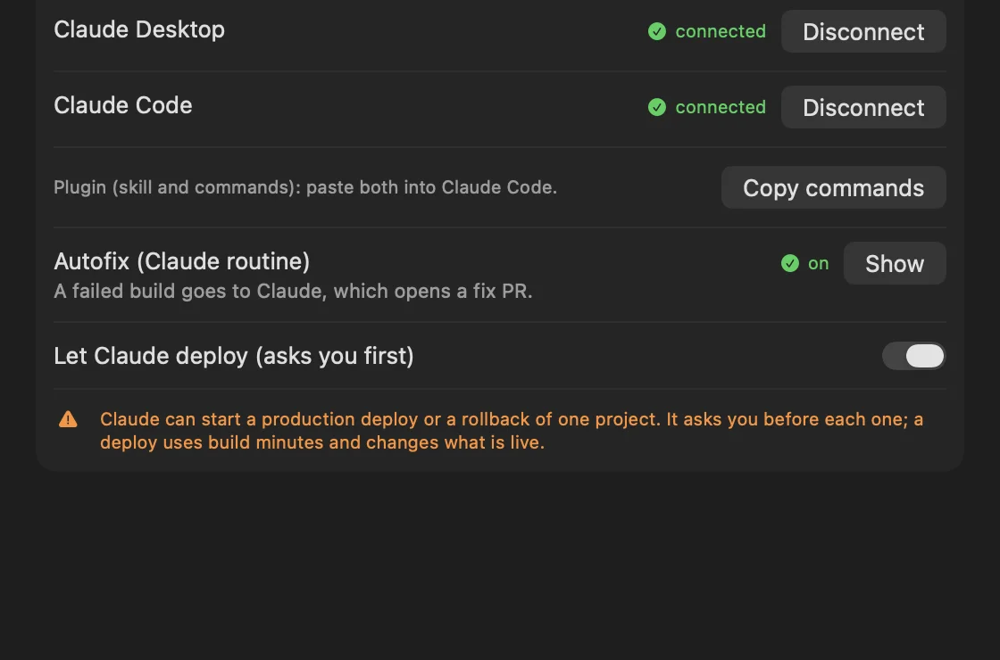
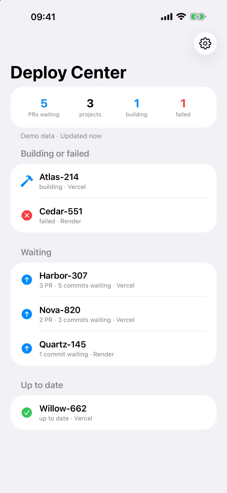
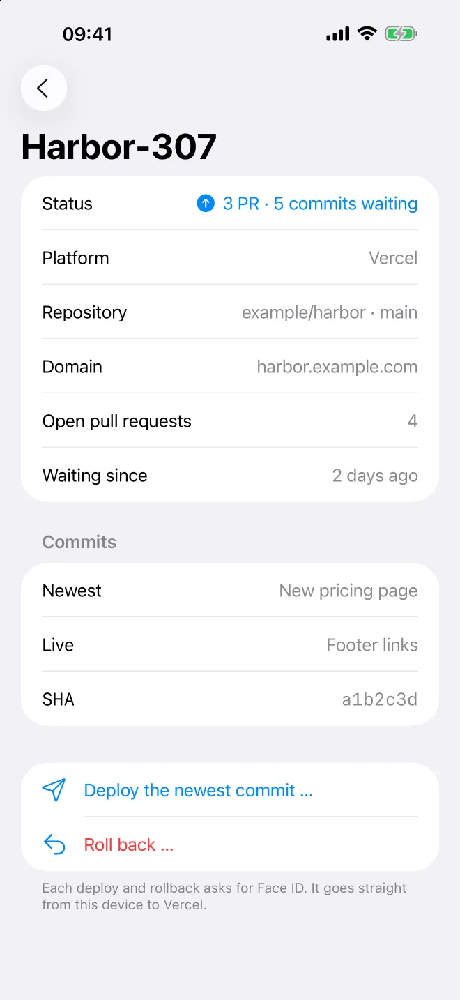
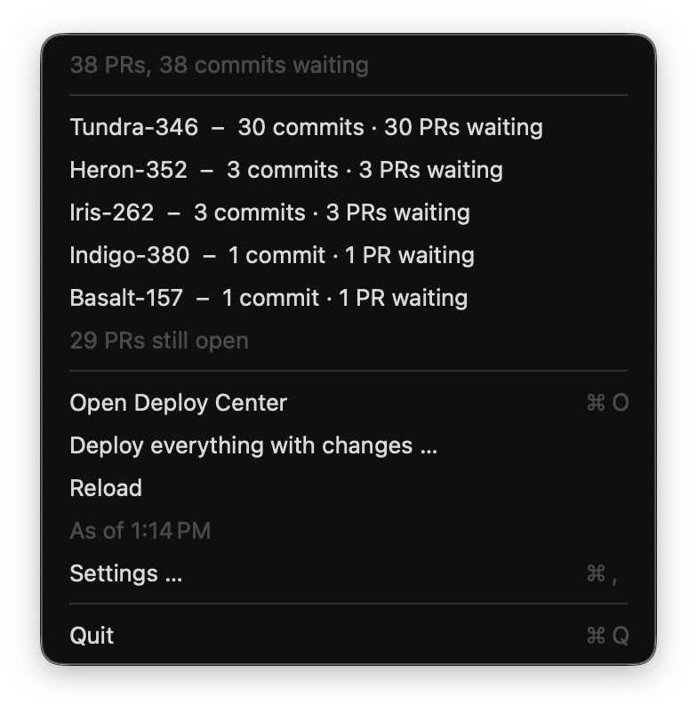

Stop paying for a build on every push.
Pay for what you ship.
Manual deploys for Vercel, Render and more. Claude fixes what breaks.
Deploy Center turns off auto-deploy in one click, shows what is waiting to go live, and deploys it when you decide. When a build fails, Claude opens a fix PR. One window, the menu bar and widgets for all your projects.
Universal app for Apple silicon and Intel · macOS 15 or later · signed and notarized by Apple · no account · no telemetry
brew tap pschmetzer/tap && brew trust pschmetzer/tap brew install --cask deploy-center
curl -fsSL https://deploycenter.app/install.sh | sh
/plugin marketplace add Pschmetzer/deploy-center /plugin install deploy-center@deploy-center
Version 0.8.0 · What’s new · All releases · Verify a release

The real app with the author's real build bill: $120 in the last 7 days before auto-deploy went off. Project names are hidden by demo mode.
Vercel and Render are on by default; the others are opt-in. Which hosts?
Every push builds every project.
Ten small commits in an afternoon are ten builds. A README typo is a build. A monorepo push builds every app connected to it. An AI agent pushes after every step. You only needed the last one live.
Auto-deploy
Deploy Center
Three steps. Then two clicks a day.
Connect once with the logins you already have. Nothing goes through a server of ours.
Connect
Vercel uses your vercel CLI login. Render takes an API key, stored in your macOS keychain. GitHub through gh or GitLab through glab shows what is waiting.
Turn auto-deploy off
One click for every project. The simulator shows the expected saving first, and the guard keeps auto-deploy off afterwards.
Deploy when you want
Select all changed (⌘A), then Deploy. Optionally only when CI is green, with a site check and automatic rollback.
Or zero clicks: a daily deploy from CI, launchd or a GitHub label. Not sure yet? Try it safely: look first, then one project, then all.
Let the agent push. Let Claude fix. You decide what ships.
Claude Code, Cursor and other agents push after every step. With auto-deploy off those pushes cost nothing, and when a build fails, Claude takes the first shot at the fix.
Autofix: a failed build fixes itself (almost)
- Build failsVercel
ERRORor Renderbuild_failed. - Log is maskedTokens, keys, passwords and emails are removed first.
- Claude Code routineYour own routine reads the log and the repo.
- Fix PR opensThe row says “Claude is fixing”, then “fix PR open”.
- You merge and deployOne click. Claude never merges.
- Never merges
- No duplicate PRs
- Caps per day
- “Fix with Claude” on any failed row
Claude in the app new
Ask Claude why a build failed (with Hand to Autofix), for plain release notes in English or German, or “Is this safe to ship?”. Your own Anthropic key and a monthly token cap; off by default.
How it works →Connect Claude in one click
Settings → Claude connects Claude Desktop and Claude Code. Claude can then ask what is waiting, read logs and notes, and deploy only if you allow it, asking you before each one.
MCP server →Claude Code plugin
A skill and four commands (/deploys-waiting, -status, -ship, -fix), plus a read-only reminder of what waits after each git push.
Agent digest
Once a day: what waits per project, with agent and human commits apart, pull requests and risk hints. As Markdown, an issue or a chat message with an approve button.
Digest →“What this ships” on every PR
A GitHub workflow runs Anthropic's Claude Code action on each pull request and comments the projects it affects, a risk level, and whether anything goes live on merge.
Workflow →Copy for Claude
The build log has failing lines in red, Jump to the first error, Errors only, and a button that copies the error and its context as a ready prompt, with secrets masked.
Guide →
One settings pane for all of it
- Claude Desktop and Claude Code: connected or not, one button each.
- Autofix: on or off, and what it did.
- Let Claude deploy: off by default; when on, Claude asks before every deploy or rollback.
- Your key, your cap: stored in the keychain, never printed, checked before each request.

Ship on purpose. Never by accident.
Manual does not mean careless. Deploy Center checks before, during and after each deploy.
Only when checks are green
Deploys only commits whose CI passed, and waits for checks that are still running.
Site check and rollback
After a deploy the app opens your page or /health. If it fails, a countdown notification rolls back unless you cancel.
Deploy windows and freeze
No deploys on Friday night or during a launch. Inside a closed window you get a warning and Deploy anyway…, journaled with a reason.
Risk score
The waiting diff is scored green, yellow or red: migrations, env files, lockfiles, build config. Risky rows get a red dot.
Auto-deploy guard new
Every 30 minutes it turns auto-deploy off again wherever it was switched back on, and tells you. Emergencies get a time-limited allowance.
A second to change your mind
A short wait before a deploy starts, with cancel. Stop all in the footer. Deploys and rollbacks always ask first.
See the saving before you switch. Then watch it add up.
Every number is marked as an estimate and says how it was made.
- Simulator: your pushes of the last 30 days times each project's average build: “auto-deploy ≈ $X a month” next to “once a day ≈ $Y”.
- Ledger: “≈ $X saved since …”, per project, in dollars, Vercel build minutes and Render pipeline minutes.
- Build costs: Vercel spend for the last 7 days, the monthly pace, and a budget with a warning at 80 %.
- Share the saving: a picture and a sentence, without project names.
$ deploys simulate --days 30 pushes to deploy branches, last 30 days web-shop 212 pushes · avg build 1 m 40 s api 96 pushes · avg build 2 m 05 s auto-deploy ≈ $41 a month once a day ≈ $6 a month $ deploys ledger ≈ $118 saved since auto-deploy was turned off 1,204 pushes that never built
Shortened illustration with made-up numbers.
What waits, at a glance. On your desktop and soon in your pocket.
You no longer have to remember to deploy: the count is in the menu bar, on the Dock, in a widget and on your phone.
Mac widgets new in 0.8
Small: pull requests waiting, with building and failed counts. Medium: your top projects and the saving. They ship with the app; add them from the widget gallery.
Demo data, with the Mac set to German.
iPhone and iPad coming to the App Store
What waits and what failed, deploy and rollback with Face ID, Home Screen widgets and background notes. Tokens stay in the device keychain; it talks straight to the hosts.


Menu bar and Dock
The number of PRs waiting, building and failed states, a Dock badge, provider outages, and a notification when a deploy ends in the background.

Command palette ⌘K
Fuzzy search over every action: deploy all changed, a project's log, site, dashboard, rollback or notes, recent commands first. Optional global ⌥⌘K.
Keyboard first
⌘R ⌘F ⌘1 ⌘2 ⌘A Esc, and a deploycenter:// link to jump to a project. VoiceOver labels and actions on every row.
Everything you need around a deploy.
Built for people with many projects and little patience.
What is waiting
Commits and merged PRs on GitHub or GitLab that are not live yet, per project and in total, open PRs too. How it counts
Preview and rollback
Preview deploys and a rollback to the previous live deploy on the hosts that support it, from the row menu or ⌘K.
Groups in order
Deploy the backend, then the frontend: each waits until the one before is live. Rows of one repo stay together.
Readable build logs
Failing lines in red, errors only, selectable across lines, ANSI codes removed, and a log button even for a failed deploy you did not start.
Demo mode
Replaces project names and domains everywhere, so you can share a screenshot without sharing your clients.
Journal and history
Every deploy, rollback and override with time and reason, and a CSV export that is safe in spreadsheets.
Updates you can trust
“Update now” checks the signature and the Team ID, refuses a downgrade, swaps with a rollback and waits until deploys are done.
English and German
The app, Claude's release notes and the README speak both.
Hosts as plugins
Each host is one script behind one contract. Switch hosts on and off in Settings → Platforms; the tabs follow.
Team mode, without a server.
A shared deploy-center.json in each repo, read with gh. Nothing to host, nothing to pay.
- Shared config: project to repo and branch, health paths, deploy windows, groups, ignored projects.
- Observer mode: read-only for anyone listed. Deploy buttons disappear and the app says “Observer”.
- Two-person rule: a production deploy needs an approving review or label from someone else, on that exact commit.
- Journal: every override with who and why.
$ deploys config web-shop health /health repo file web-shop approvals two-person repo file window closed Fri 16:00–Mon repo file readonly off this Mac $ deploys deploy web-shop ✗ needs an approval from someone else on a1b2c3d
Shortened illustration; the schema has the exact keys.
Where you already work.
All of them sit on top of the same deploys script. None of them deploys without asking.
VS Code, Cursor, Windsurf
Waiting count in the status bar, a project tree, deploy with confirmation, build log and “Copy for AI”.
Raycast
Waiting Deploys, Deploy Status and Deploy All Changed, with release notes to copy.
GitHub Action
What waits as a job summary, a daily deploy, or a deploy on a label.
Daily summary
One message a day to Slack, Discord, Telegram, ntfy or Mattermost.
Status page
A static “what shipped when” page with an Atom feed and JSON, for customers and teams.
Badges
What waits or what is live, as a badge for your README.
Pre-push hook
A line after each push: what now waits, and whether auto-deploy is still on.
Docker image
The CLI for any CI, with --json on every command.
A window over one bash script.
Everything the app does, deploys does in your terminal, on a server or in CI. Add --json to any command.
- Installs anywhere: macOS, Linux, WSL and CI, SHA-256 checked, no sudo by default.
- Your logins:
vercelCLI, keys in the keychain,ghorglab. - Scriptable: a daily deploy from
launchd, cron or a GitHub label. - Tested: script and app tests run without a network.
$ deploys changed web-shop 12 commits · 9 PRs waiting api 3 commits · 3 PRs waiting docs up to date $ deploys risk web-shop ● yellow lockfile and build config changed $ deploys deploy-changed --when-green --yes ✓ web-shop live in 48 s ✓ api live in 1 m 12 s $ deploys ai notes web-shop --lang de Neue Preisseite, schnellere Suche …
Shortened illustration; the real output has a few more columns.
Your keys stay on your Mac.
No account, no server of ours, no telemetry. Read the threat model before you trust it.
Keychain only
Keys are stored in the macOS keychain, read over stdin, never printed and never passed as a command argument.
Masked before it leaves
Anything sent to Claude or copied for it is masked first: API keys and tokens, AWS, Stripe and Google keys, private key blocks, passwords and email addresses.
Open and signed
MIT source on GitHub, an app signed and notarized by Apple, and release checksums you can verify.
Security and threat model → · This page loads nothing from third parties.
Why not just …
There are good ways to cut builds by hand. Deploy Center is the fast way when you have many projects.
| Feature | Ignored Build Step | Disconnect Git by hand | Status menu bar apps | Deploy Center |
|---|---|---|---|---|
| Setup for 30 projects | A script per project | 30 settings pages | Nothing is turned off | One click |
| See what is waiting | No | No | Deploy status only | Per project and total |
| Deploy many at once | Push again | CLI, one by one | No | Select all changed → Deploy |
| Several hosts | Vercel only | A different setting each | Some | Same window |
| A failed build gets a fix PR | No | No | No | Autofix with Claude |
| Only when CI is green, rollback on a failed check | No | No | No | Yes |
| Stays off | Yes | Until someone reconnects | – | The guard checks every 30 min |
| Costs and savings in view | Dashboard | Dashboard | No | Chart, budget, simulator, ledger |
| Widgets and phone | No | No | Some | Mac widgets, iPhone soon |
| Team approvals | No | No | No | Two-person rule, observers |
Swipe the table sideways to compare.
$120 in one week.
That was the author's Vercel build bill with auto-deploy on, mostly from small pushes and an AI agent that pushed after every step. Deploy Center started as one bash script to turn it off and ship once a day. Now it is a free app, so nobody else has to write that script.
Questions
Is it really free?
Yes. MIT license, no paid tier, no account. The code is on GitHub.
Does my data go anywhere?
No server of ours and no telemetry. The app talks to your hosts with your own logins, to GitHub through gh or to GitLab, and once a day to GitHub's release page to look for updates (you can turn that off). Only if you turn on Claude in the app does it send masked text to api.anthropic.com, with your own key.
Does Claude merge or deploy anything on its own?
No. Autofix opens a fix pull request and never merges it; deploying stays a click. The MCP server is read-only unless you switch on “Let Claude deploy”, and then Claude asks before each deploy or rollback, one project at a time.
Do I need an Anthropic API key?
Only for Claude in the app (explain a failure, release notes, ship check), which is off by default and has a monthly token cap. Autofix runs as your own Claude Code routine. Everything else works without Claude.
What do I lose without auto-deploy?
Automatic deploys and automatic preview builds per pull request. You have to remember to deploy; the menu bar count, the widgets and an optional daily summary help. Preview deploys can still be started by hand.
Can I go back?
Yes. deploys vercel autodeploy-on and deploys render autodeploy-on turn it back on, or use the Vercel and Render dashboards. Deploy Center remembers each Vercel repo before it disconnects it. Auto-deploy off and on · Uninstall
Which hosts are supported?
Vercel and Render are on by default. Netlify, Cloudflare Pages, AWS Amplify, DigitalOcean App Platform, Coolify and a generic deploy hook are opt-in: deploys providers enable netlify, or Settings → Platforms. On Cloudflare Pages it saves build quota rather than money. Waiting commits come from GitHub or GitLab.
Is there an iPhone app?
It is built and on its way to the App Store: what waits, deploy and rollback with Face ID, and Home Screen widgets. The Mac app and its widgets are available now. Watch the repo to hear when it is out.
Can my team use it?
Yes, without a server: a shared deploy-center.json in each repo, observer mode, and an optional two-person rule for production deploys.
I need push deploys back for a while, but the guard turns them off.
Usually a deploy by hand is enough. If you really need push deploys for a while, deploys autodeploy allow <platform> <project> <hours> lets the guard leave that project alone until the time runs out.
Windows or Linux?
The app is macOS only. The deploys CLI is bash and installs on Linux, WSL and in CI: curl -fsSL https://deploycenter.app/install.sh | sh.
Ship when you decide.
Free for macOS 15 and newer, Apple silicon and Intel.
Not on a Mac? Use the CLI on Linux, WSL or in CI. Using Claude Code? Add the plugin.